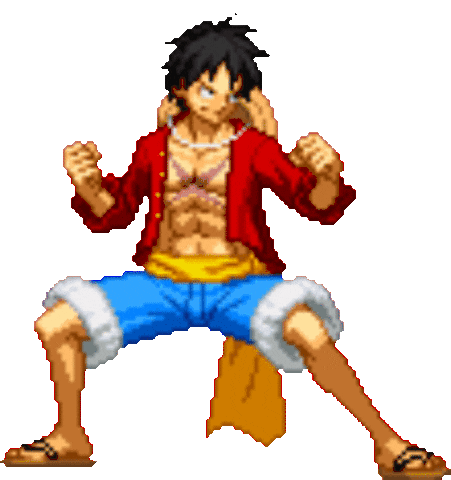
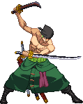
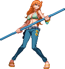
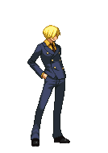
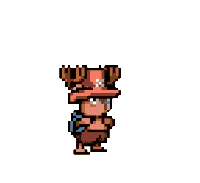
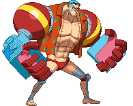
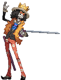

-
Monkey D. Luffy
- Capitão
O protagonista principal, capitão dos Piratas do Chapéu de Palha. Ele é um lutador habilidoso que busca se tornar o Rei dos Piratas e possui o poder da Gomu Gomu no Mi, que o transforma em um homem de borracha.
-
Roronoa Zoro
- 1° Comandante
O espadachim dos Piratas do Chapéu de Palha e o primeiro membro a se juntar à tripulação de Luffy. Zoro é incrivelmente habilidoso com a espada e tem o objetivo de se tornar o melhor espadachim do mundo.
-
Usopp

- Atirador
O atirador dos Piratas do Chapéu de Palha. Usopp é habilidoso com armas de longo alcance e é conhecido por suas habilidades de tiro precisas. Ele também é um grande contador de histórias.
-
Nami
- Navegadora
A navegadora dos Piratas do Chapéu de Palha. Ela é extremamente talentosa em navegação e meteorologia e possui um bastão especial chamado Clima-Tact, que pode criar diversos efeitos climáticos.
-
Sanji
- Cozinheiro
O cozinheiro dos Piratas do Chapéu de Palha. Sanji é um mestre na arte da culinária e usa técnicas de luta com suas pernas, conhecidas como Estilo de Perna Negra, para derrotar seus inimigos.
-
Tony Chopper
- Médico
O médico dos Piratas do Chapéu de Palha. Chopper é uma rena que comeu a Hito Hito no Mi, concedendo-lhe a habilidade de se transformar em uma forma humana. Ele também possui várias formas de Monster Point, aumentando sua força e tamanho.
-
Franky
- Carpinteiro
O carpinteiro dos Piratas do Chapéu de Palha. Ele é um cyborgue com diversas armas embutidas em seu corpo. Franky é especialista em criar e consertar navios e tem um forte senso de justiça.
-
Brook
- Músico
O músico dos Piratas do Chapéu de Palha. Brook é um esqueleto vivo que toca violino e possui a habilidade da Yomi Yomi no Mi, que lhe permitiu retornar à vida após a morte. Ele é um espadachim habilidoso.